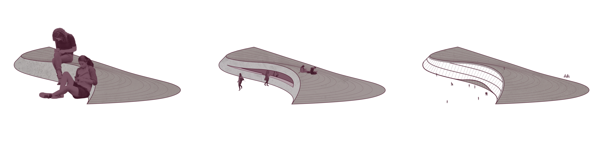
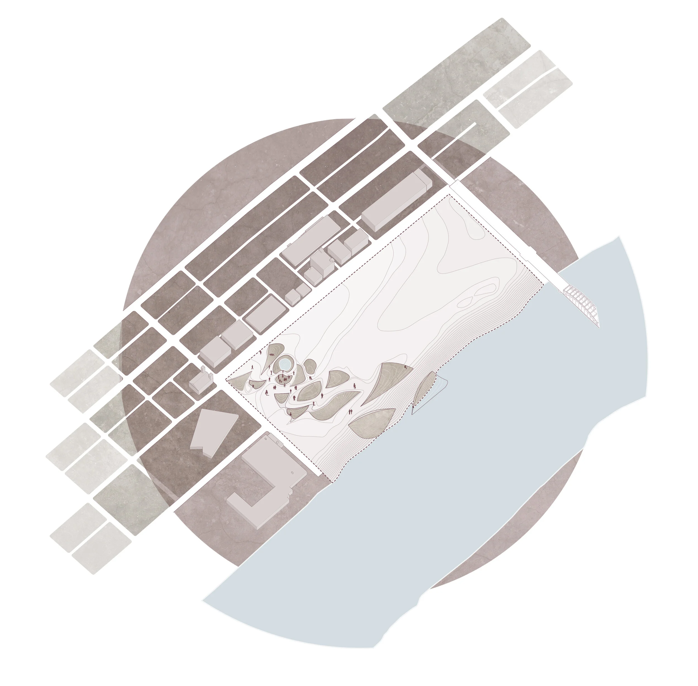
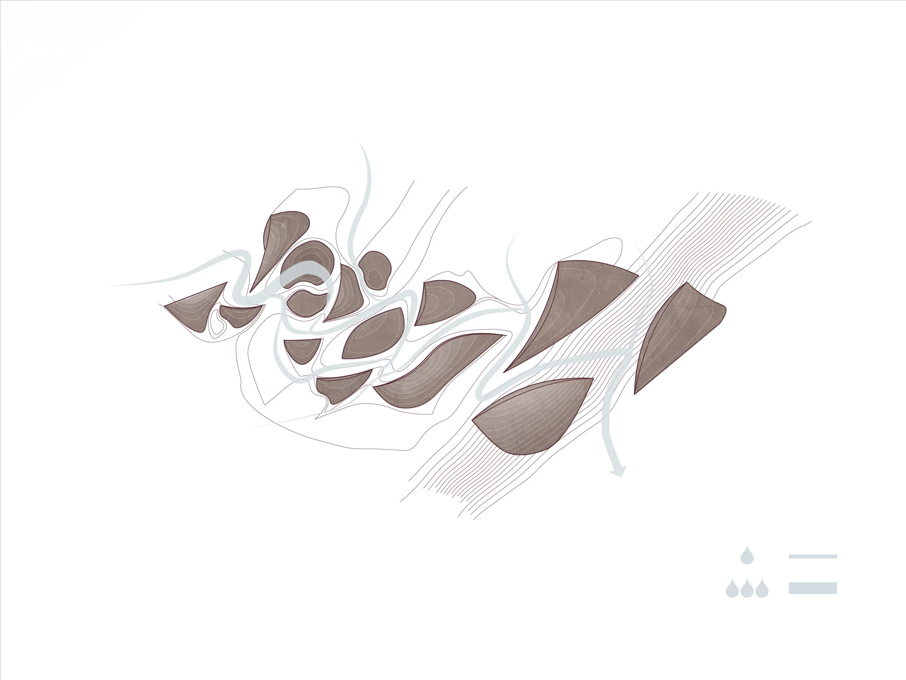
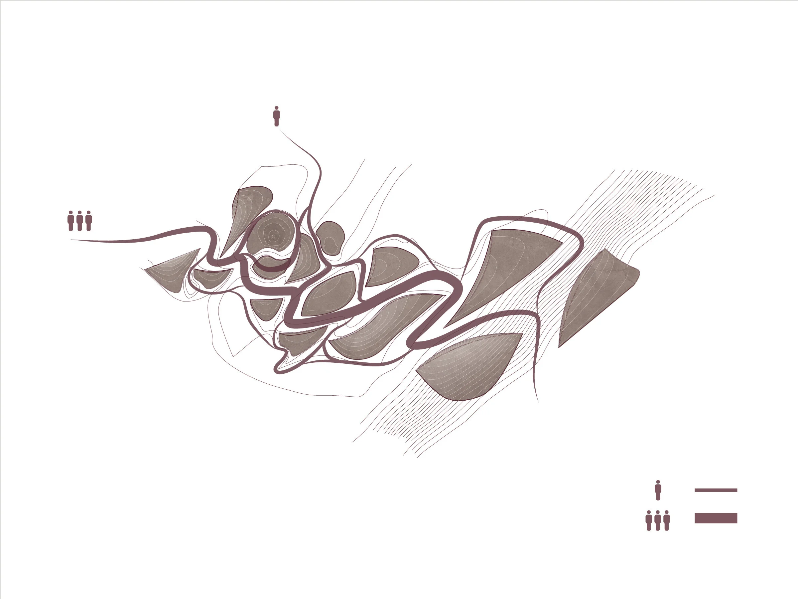

Eco-Machine
This partner project began with a landscape intervention that addresses flooding and erosion from rainwater on our riverside site in the Strip District, Pittsburgh. We observed how water molds its own unique path to the river.
Through study models, we explored how various types of imposed barriers elongate the water path, slow down the current, and retain overflow. Our resulting barrier is a subtle topographical form made from a concrete shell, with a one rigid side to give direction to the water path.
While we are proposing a range of small to mid-size shells, the whole intervention could range in scale from a bench, to a kiosk, to a whole building. Regardless, the water will flow following the path implied by the barriers.






The shells direct the water primarily along one path with the opportunity to break off into small flows. This logic applies to the flow of people. The main circulation parallels the primary water path. Groups are encouraged to gather around spots where water pools. Private areas are found if one follows the smaller branches of the water flow.
The topological shells also allow for change over time, as the water will slowly carve a deeper path and soil and plants will grow over the shells. Because of this, the site can appear more landscaped or architectural depending on the levels of water, land, and erosion.
The next stage in this project is Eco-Morphology.